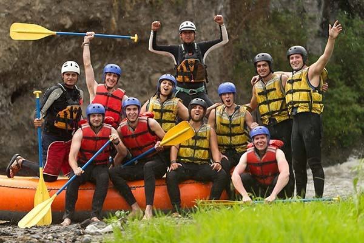

Welcome to the home of the Canyon River White Water Rafting Company. We are committed to providing you with a thrilling and memorable white water rafting experience. Rest assured your guides are trained and qualified in keeping you safe, while also making the trip fun for the entire family.